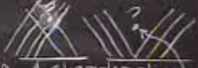

Formüllerimizin tekrar üzerinden geçelim,
$$ \frac{\partial u}{\partial t} + \frac{\partial }{\partial x} f(u) = 0 \qquad (1) $$
$$ \frac{\mathrm{d}}{\mathrm{d} t} \int_{x_L}^{x_R} u \mathrm{d} x + f(u_R) - f(u_L) = 0 \qquad (2) $$
$$ u(x,t) = u(x - f'(u) t, 0) \qquad (3) $$
İki formül tek sayısal, tek boyutta muafaza kanununu gösteriyor. Yer tek boyutlu, sadece $x$ var. Akış fonksiyonu $f(u)$. (1)'de diferansiyel form var ve gördük ki bu form bir süreksiz (discontinuous) çözüm, süreksizlik ortaya çıkarıyor. Bu sebeple denklemin entegre edilmiş formu (2) ile iş yapmaya karar verdik. Mesela $u$'da yoğunluk olsaydı entegrasyon bize iki nokta arasındaki kütleyi verirdi (çünkü kütle, yoğunluğun bir hacim üzerinden toplanmış halidir), o zaman (2)'deki entegralin türevi kütlenin zamana göre değişimi olurdu, ve diğer iki terimi de göz önüne alırsak, bu değişim sadece dışarı çıkan, eksi giren akışa eşit olurdu. Muhafaza kanunu budur.
Diferansiyel denklemin çözümü (3) ile karakteristik çizgiler ortaya çıktı, onları başlangıç zamanı $t=0$'dan takip edebiliyorduk. Başlangıçtaki değerleri çizgi boyunca taşınıyordu, problem karakteristikler çakıştığında ya da aynı başlangıçtan farklı yönlere yayıldığında / dağıldığında (fan out) ortaya çıkıyordu. Bu iki farklı durumu altta görüyoruz.

İki farklı problem üsttekiler ve ikisinin de farklı tedavisi var. Soldaki trafik örneğinde kırmızı ışık yandığındaki durum, ışığa gelen arabalar orada tıkanıyor, ışığın öteki tarafında yoğunluk az, ama gerisinde durum farklı, ve arabalar hızlı bir şekilde durmalılar. O soru işareti olan yeri düşünelim, aynı noktaya farklı yönlerden gelen iki değer nereye gider? Bu durumu halledecek bir kural lazım.
Aynı şekilde üst sağdaki durum için bir kural lazım. Orada soru işareti boşlukta, ama orası bir değeri temsil ediyor, oraya nasıl gelinir, hiç bir karakteristik oraya gitmiyorsa?
Birinci duruma bakalım önce, o çakışan bölümü silelim, orada olan şudur, bir şok oluşur (yeşil çizgi), bir şok cizgisi oluşur, ve o bölgedeki karakteristikler o çizgiye "akar", enformasyonu ona aktarırlar. Bu önemli bir durum bu arada..
Peki sökün kendisinin özellikleri nedir? Ne hızda ilerler? Şok hızı nedir? Bu şoku $x,t$ düzleminde tanımlamak için (2)'deki entegral formu kullanmam lazım. Entegral formu kullandım çünkü ortada bir süreksizlik var, o durumlarda diferansiyel formlar anlamsız hale geliyor.
[devam edecek]